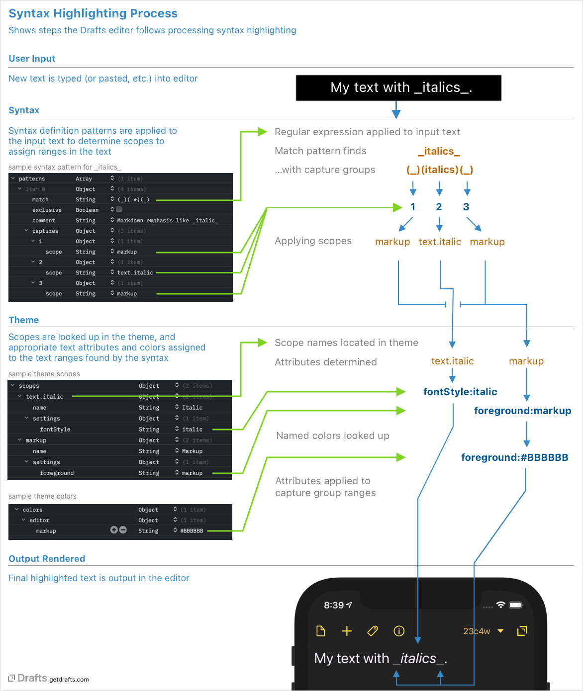

Developing Syntaxes & Themes
Table of Contents
Developing Syntaxes & Themes
Syntax and theme definitions are configurations used to control the appearance of text in the editor and the user interface elements throughout Drafts. More details on formats and the development workflow are available in separate articles on creating syntaxes and themes, but it is useful to understand some basic of how themes and syntaxes are applied within Drafts before diving into creating your own.
Syntax Highlighting Process
Before attempting to modify syntaxes or themes, it’s a good idea to have a basic understanding of how they interact and are used in the app. The below diagram covers the basic flow of the syntax highlighting process.

To summarize:
- Text is modified in the editor. This could be due to typing, clipboard events, or actions. Anything that changes text triggers syntax highlighting to update.
- Patterns in the syntax definitions contain regular expressions to match text. Each of these patterns is applied, in order, to affect text.
- If a pattern finds a match in the text, the capture groups in the regular expression are used to break up that match into parts, and apply “scopes” to each range.
- Then the theme takes over, and the scopes applied to ranges are translated into attributes to apply to the text - attributes include font size, style, and colors.
- Those attributes are applied and the text render in the editor.
What is Developer Mode? PRO
Developer mode is an option in Draft settings that enabled access to file-based custom syntax and theme definitions. When enabled, custom syntax definitions stored in iCloud Drive/Drafts/Library/Syntaxes, and custom themes stored in iCloud Drive/Drafts/Library/Themes become available for selection in Editor Preferences.
These file-based syntaxes and themes should only be used for developement purposes. When you have finished a syntax or theme you wish to use in the app, it should be imported into Drafts, so it will sync to all your devices, and load in a performant manner.
Enabling Developer Mode
To enable developer mode, turn on the option in Drafts Preferences. Generally speaking, it’s best to leave the option off if you are not actively working on developing or maintaining custom syntax or theme definitions.
Developer Workflow
Once enabled, you can make custom syntax and theme definitions available to test in Drafts by placing them in the following folders:
- Syntaxes:
iCloud Drive/Drafts/Library/Syntaxes - Themes:
iCloud Drive/Drafts/Library/Themes
These files should be in JSON format, saved with UTF-8 encoding. The preferred file extensions are .draftsSyntax for syntaxes, and .draftsTheme for themes, but .json files are fine while in development as well.
Drafts does not contain its own JSON editor, edit in your favorite JSON editing tool. Although you can edit JSON files in any text editor, because of the heavy reliance on regular expressions, and the need for properly escaping values, a dedicated JSON editor is helpful. A couple I have used and enjoy:
- JSON Editor: Mac App Store
- Jayson: Mac, iOS